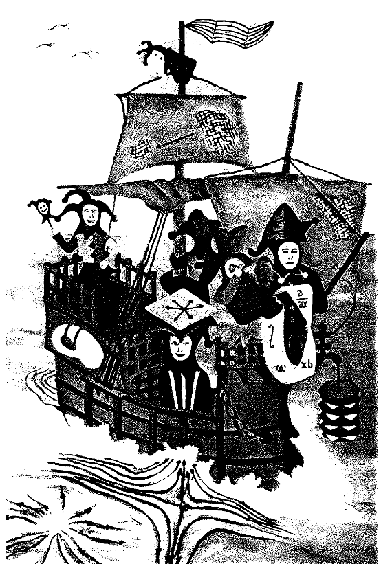

This website is mainly focused archiving some useful links I might need to share for me and my mutuals. Also possibly writing small blog type posts about random topics in life.
About me:
Living in Helsinki, Finland.
23 years of age.
B.Sc in mathematics (LuK), minor in computer science.
At end of my MSc studies (FM), hopefully soon a PhD student.
Bachelor's student in mechanical engineering (Tekn. yo).
My mathematical specializaiton is lies between topology, geometry, algebra and analysis where my master's thesis is in differential topology.
Some of my interests other interests include, listening and playing music (guitar is my main instrument), philosophy (non boring subjects status quo politics or other nonsense), culture, breathing air etc...
My favorite music genres are mostly guitar based with (prog) rock, (gypsy) jazz, blues or metal, but I also enjoy edm like trance or gabber.
Email: kalle dot a dot heinonen YOU KNOW THE SYMBOL HERE helsinki dot fi or kalle dot heinonen YOU KNOW THE SYMBOL HERE aalto dot fi
tg: kalle0001
ig: kalleheinonen_
Picture of me.

Esoteric picture from Spivak's differential geometry book for mystery.
Links: